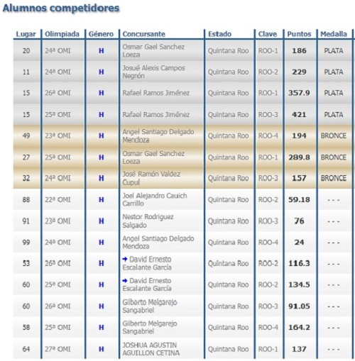

La Olimpiada Mexicana de Informática (OMI) es un concurso a nivel nacional para jóvenes con facilidad para resolver problemas prácticos mediante la lógica y el uso de computadoras, que busca promover el desarrollo tecnológico en México y encontrar a los mejores programadores, quienes formarán la selección mexicana para participar en las próximas Olimpiadas Internacionales de Informática.
" Fomentar entre los estudiantes de nivel medio superior del país, el interés por la informática y las ciencias de la computación, Motivar la educación de alto nivel en estas ramas en México.

¡Si tu, quieres ser uno de estos participantes te invitamos a que te unas a nuestro plantel!